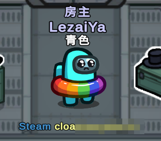

启用该选项后，在大厅等待时，所有玩家的所属平台（如Steam、Epic等）及好友代码将会显示在玩家下方。
这不仅方便玩家查看房间成员的来源平台，还能帮助开发团队快速识别潜在的作弊者——当玩家举报外挂时，好友代码可作为关键数据提交，便于开发组追踪违规账号并进行处理。
FinalSuspect
Slok
FinalSuspect
展示玩家平台与客户端信息
在进行直播、素材录制等活动时我们建议您关闭此功能来保护隐私。
展示玩家平台与客户端信息示意图：
